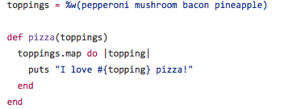
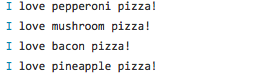
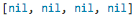
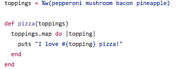
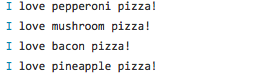
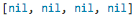

Enumerable Method
.map
Friday, March 11 2016
First things first, enumerable methods are extremely useful! Expecially if you struggle using for/while/unless loops like me. They also make your code easier to understand! You just need to know what the method means, which is easier if you use THIS site. In this week's post we will be going over how the method .map is used!
.map returns an array filled with the value of the block of code you specify each time it runs. Here's an example of the syntax:

This is what it will print out:

This is what it will return:

.map returns nil in each of the elements of the array because the value of puts is nil. You can look at this as a way to tell that your code is actually running for each element. If you wanted to see "I love (whatever topping) pizza!" in each of the elements, you would need to remove the puts.
Examples were taken from http://learn.onemonth.com/ruby-tutorial-map-vs-each
First things first, enumerable methods are extremely useful! Expecially if you struggle using for/while/unless loops like me. They also make your code easier to understand! You just need to know what the method means, which is easier if you use THIS site. In this week's post we will be going over how the method .map is used!
.map returns an array filled with the value of the block of code you specify each time it runs. Here's an example of the syntax:
This is what it will print out:
This is what it will return:
.map returns nil in each of the elements of the array because the value of puts is nil. You can look at this as a way to tell that your code is actually running for each element. If you wanted to see "I love (whatever topping) pizza!" in each of the elements, you would need to remove the puts.